原文连接:https://www.cnblogs.com/hxun/p/11771955.html
1.1 电商行业特点
1.分布式
垂直拆分:根据功能模块进行拆分
水平拆分:根据业务层级进行拆分
2.高并发
用户单位时间内访问服务器数量,是电商行业中面临的主要问题
3.集群
抗击高兵发的有效手段,同时集群内部实现高可用
4.海量数据处理
随着公司数据的不断积累.自身的数据量很庞大.如果高效的处理数据/分析
1.2 框架调用流程
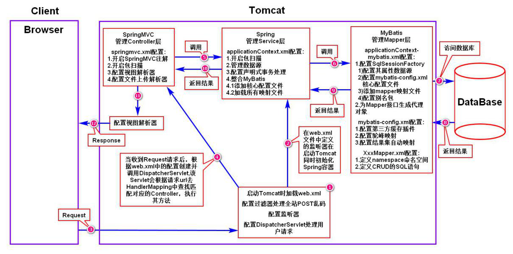
1.3 EasyUI后台调用流程
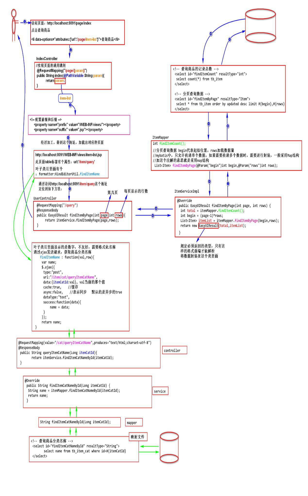
1.4 分布式项目的设计思想
为了实现架构之间的松耦合,将项目根据分布式的思想进行拆分.
1.项目的垂直拆分
根据功能模块的不同将项目进行拆分.
2.项目的水平拆分
在大型项目中,由于开发的人数众多,项目复杂度高.为了保证项目开发的耦合性低.实现项目的水平拆分.
将一个大型项目根据层级模块进行拆分.Controller项目/Service项目Mapper项目
项目创建时采用聚合项目的方式进行管理
1.5 分布式项目的jar包如何管理
将项目中用到公共的jar包使用服务支撑项目jt-parent进行添加,其他的项目只需要继承jt-parent后获取对应的jar包全部依赖.从而实现了jar包的统一管理
1.6 介绍一下通用Mapper
- 早期使用JDBC操作数据库.该操作特别的繁琐,并且所有的数据需要自己手动的封装.
- JPA:是java持久化的API(用面向对象的方式操作数据库)思想
User user = new User(); setXXXX
User.setId(1);
User.setName(tom);
工具API.insert(user); JPA内部将对象自动转化为sql语句
Insert into …….3.Haibernate框架.号称是自动化的(ORM)
程序员只需要操作对象,从而完成了对数据库的操作.
缺点:
- 做新增/删除/修改会产生一些冗余的sql(出于安全性性考虑)
- 如果做多表关联操作(CRUD) ,需要装备配置文件,通过配置文件进行数据关联设定.同时需要学习Hql(语句)
- 早期数据库容量是有限,超过500万后查询效率开始变低.
4.Mybatis，优点:继承ORM,摈弃了冗余的sql(自己手写),
5.通用Mapper插件基于mybaits的效果，可以实现单表CRUD使用对象操作.(反射机制)
1.7 Nginx是什么,有什么作用？
Nginx (engine x) 是一个轻量级的是一个高性能的HTTP和反向代理服务器,其特点是占有内存少，并发能力强
主要是用来反向代理和实现负载均衡.
1.8 谈一下反向代理和负载均衡
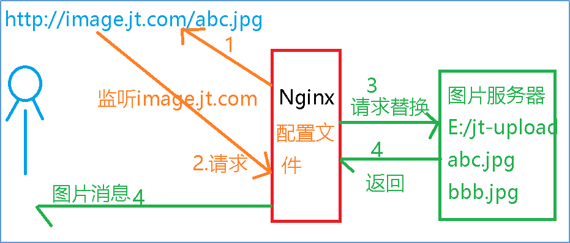
说明:
- Nginx首先需要监听特定的域名.
- 当用户根据域名进行资源访问时.首先会访问nginx
- 之后nginx代替请求者根据内部的配置文件,实现反向代理.将请求转化为特定的请求路径进行资源访问.
- 当Nginx获取资源后将数据返回给用户.完成请求的正确的响应.
负载均衡:访问量高时,可以让服务器尽量分摊压力,
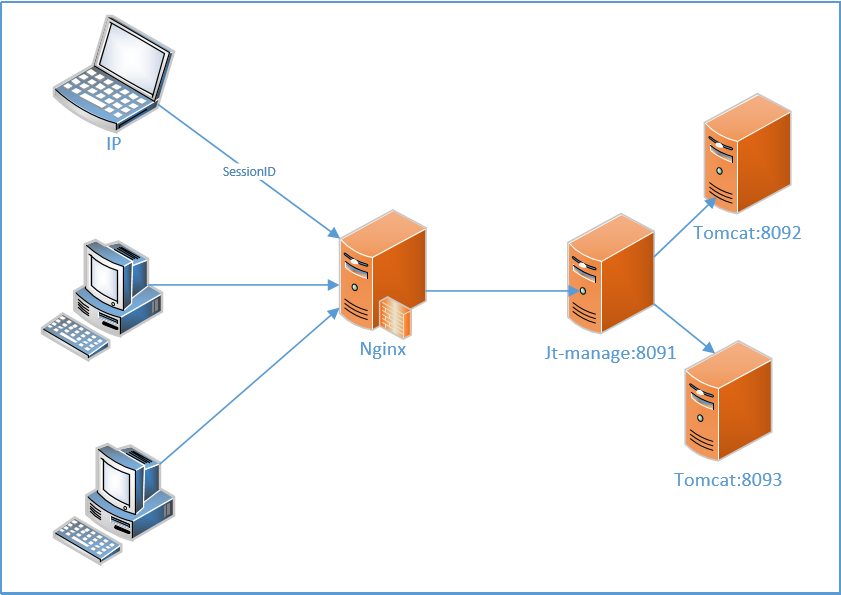
实现策略:轮询,权重,IP_HASH(一般不用)
1.9 Nginx的健康监测机制
当后台的服务器出现宕机的现象,当时nginx中的配置文件并没有改变时,请求依然会发往故障的机器.需要人为的维护配置文件,这样的操作不智能.那么采用健康检测机制.可以实现故障的自动的迁移.
属性介绍:
1.max_fails=1 当检测服务器是否正常时,如果检测失败的次数达到规定的次数时,则断定该服务器故障,在规定的时间周期内,不会将请求发往该机器.
2.fail_timeout=60s定义时钟周期
1.10 Nginx如何保证请求参数不丢
在nginx中添加请求头的参数,表示每次请求时,携带请求者的请求头信息,访问服务器.
proxy_set_header X-Forwarded-Host $host;
proxy_set_header X-Forwarded-Server $host;
proxy_set_header X-Forwarded-For $proxy_add_x_forwarded_for;1.11 数据库数据如何备份(数据备份策略)
- 冷备份:定期将数据库中的文件进行转储,定期进行数据备份.
- 热备份:搭建数据库主从结构,当主库数据发生改变时,从库根据主库的二进制日志文件进行备份.
- 双机热备:数据库互为主从,数据库代理服务器对主库进行心跳检测,实现数据的高可用,为了防止主库宕机后发生雪崩现象
1.12 数据库压力大时,怎么实现高可用
1.用数据库代理服务器搭建数据库的读写分离进行分流.读取从库数据,写数据在主库
可用的数据库代理服务器有Amoeba和Mycat
由于大量的用户的数据库操作都需要通过数据库来完成.造成数据库负载过高.因为数据库操作中查询的操作占很大的比重.
2.数据库实现双机热备.
1.13 数据库的优化策略
- 优化sql语句(多表操作) where 左连接 右连接 内连接
原则:尽可能根据主键查询,尽可能少用关联查询.
- 创建索引(对经常查询的数据创建索引)
- 添加缓存(Redis/MemCache)
- 定期进行数据转储(将一些查询较少的数据保存到历史表,让当前表维护可控的数据量)
- 分库分表(需要大量的数据库服务器)
1.14 什么是Mycat
是一个数据库中间件,实现读写分离,分库分表和数据库故障迁移.
1.15 什么是Redis,运行在哪里
开源的内存中的数据结构存储系统,可以用做数据库,缓存和消息中间件
基于C语言开发,运行时在内存中,运行速度很快
https://mp.weixin.qq.com/s/0Fqp2aGq7c_x_bEK9pOeeg
1.16 Redis中的数据持久化策略
如果使用时允许丢失部分数据(少量的)则使用RDB模式,它的效率高,也是redis默认的策略,如果不允许丢失数据则采用AOF模式,它的安全性高,但是效率较低.
1.17 Redis中的内存维护策略
问题:如果数据都存储到redis中,如果内存占满了,redis如何维护?
解决方案:
- 动态的扩容redis节点(不科学)
- 为数据设定超时时间
- 动态的将不用的数据删除.(LRU算法)
算法介绍:
内存管理的一种页面置换算法，对于在内存中但又不用的数据块（内存块）叫做LRU，操作系统会根据哪些数据属于LRU而将其移出内存而腾出空间来加载另外的数据。
1.18 redis为什么要分片
特点:实现动态内存扩容
数据存储机制:
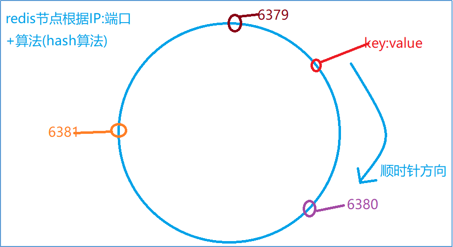
1.19 Hash一致性
1.均衡性：尽可能均匀分片节点中的数据
2.单调性：实现数据的动态迁移
3.分散性：由于分布式原因,导致不能获取全部节点信息,使得一个key有多个位置
4.负载：是分散性另一种表现形式.表现为一个位置有多个key
1.20 知道哨兵机制吗,怎么实现的,实现了什么功能
功能:实现redis高可用
机制:心跳检测

1.21 哨兵和分片的优缺点
优点:
- 分片可以使redis动态内存扩容.
- 分片可以将数据均匀的分配到不同的节点中,使数据分散保存.
- 哨兵可以实现redis高可用.
缺点:
- 分片如果有一个节点出现宕机则整个分片都不能正常使用.
- 哨兵如果发生宕机现象,则影响整个redis服务.
升级:
- 使用多台redis实现内存空间的动态扩容.
- 实现在redis内存实现高可用(不再使用哨兵机制)使用组件(ruby)
搭建集群,实现分片和高可用的全部功能.
1.22 Redis集群
使用ruby工具创建集群.集群中全部的节点相互之间互相通讯.在redis内部实现高可用.redis集群是分片和哨兵的集合体.
1.23 伪静态技术
动态页面不能被搜索引擎收录.为了保证搜索引擎的友好性.则以.html的静态页面形式展现动态页面数据
1.24 跨域问题
说明:在www.jt.com中调用manage.jt.com时访问不成功.原因该操作是一个跨域请求.
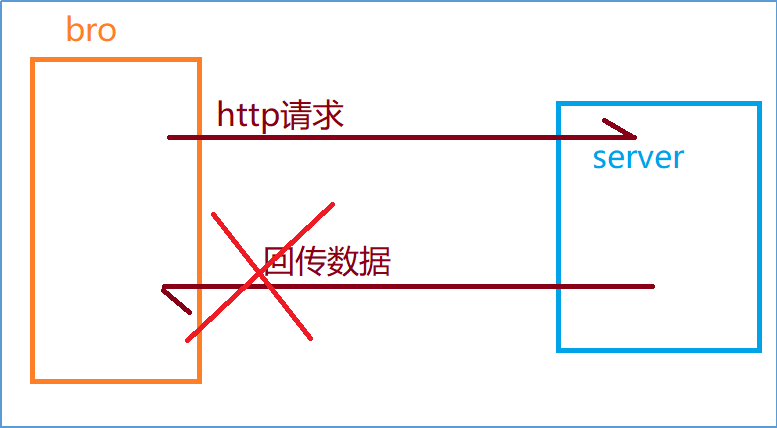
浏览器不允许进行跨域请求.会将成功返回的数据进行拦截.不予显示.一切出于安全性的考虑.
1.25 同源策略
规则：请求协议/域名/端口号是否相同,如果三者都一致,那么是同域访问.(即同源策略)浏览器可以正常执行.除此之外的全部的请求都是跨域请求.
1.26 怎么解决跨域问题?
利用javascript中src属性实现跨域.
客户端定义回调函数 callback=hello
服务端程序封装特定的JSON格式 callback(JSON) 执行回调函数
JSONP就是基于这个原理实现的.
JSONP(JSON with Padding)是JSON的一种“使用模式”，可用于解决主流浏览器的跨域数据访问的问题。由于同源策略，一般来说位于 server1.example.com 的网页无法与不是 server1.example.com的服务器沟通，而 HTML 的<script> 元素是一个例外。利用 <script> 元素的这个开放策略，网页可以得到从其他来源动态产生的 JSON 资料，而这种使用模式就是所谓的 JSONP。用 JSONP 抓到的资料并不是 JSON，而是任意的JavaScript，用 JavaScript 直译器执行而不是用 JSON 解析器解析
1.27 JQuery中怎么使用JSONP
跨域的缺点:回调的函数需要提前定义.程序员自己定义.
解决方案: 采用jQuery中的JSONP实现跨域的请求.
语法:
$.ajax({
url:"http://manage.jt.com/web/testJSONP",
type:"get",
dataType:"jsonp", //返回值的类型 JSONP必须添加否则不能回调 函数
jsonp: "callback", //指定参数名称
jsonpCallback: "hello", //指定回调函数名称
success:function (data){
alert(data.id);
alert(data.name);
//转化为字符串使用
//var obj = eval("("+data+")");
//alert(obj.name);
}
});1.28 HttpClient
HTTP 协议可能是现在 Internet 上使用得最多、最重要的协议了，越来越多的 Java 应用程序需要直接通过 HTTP 协议来访问网络资源。虽然在 JDK 的 java net包中已经提供了访问 HTTP 协议的基本功能，但是对于大部分应用程序来说，JDK 库本身提供的功能还不够丰富和灵活。HttpClient 是 Apache Jakarta Common 下的子项目，用来提供高效的、最新的、功能丰富的支持 HTTP 协议的客户端编程工具包，并且它支持 HTTP 协议最新的版本和建议。HttpClient 已经应用在很多的项目中，比如 Apache Jakarta 上很著名的另外两个开源项目 Cactus 和 HTMLUnit 都使用了 HttpClient。现在HttpClient最新版本为 HttpClient 4.5 (GA) （2015-09-11）
总结:HttpClient是java为了远程请求开发的http请求工具包.
1.29 HttpClient和JSONP的区别
- JSONP是基于浏览器的,解决跨域问题的.而httpClient是基于代码.模拟http请求.获取服务端的参数的,功能上类似,但是经过的环节不同.
- 安全性不同：JSONP的全部信息都可以通过浏览器进行监控.但是HttpClient浏览器不能监控.
3.代码调用层级不同：Jsonp需要调用服务端业务逻辑,最多3层，HttpClient需要调用5层
适用场景：如果从服务端获取数据,js可以直接解析.使用JSONP,如果服务端的程序的返回值,需要进一步处理.这时使用HttpClient
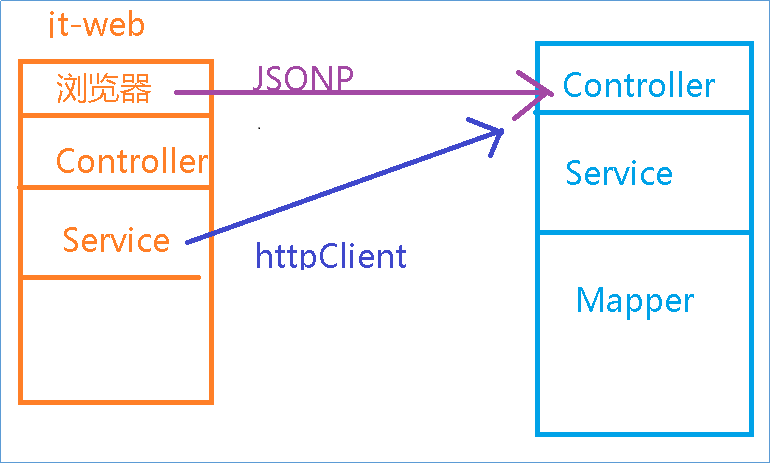
1.30 你的单点登录是怎么调用的
流程图:
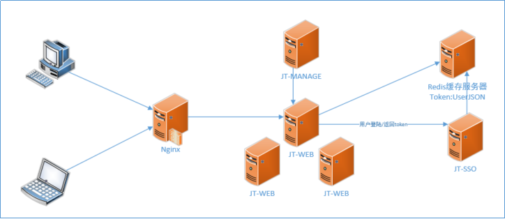
原理:
实现步骤:
当用户登陆时,通过nginx访问jt-web中任意的服务器之后输入用户名和密码访问JT-SSO单点登录服务器.
获取用户的登陆信息查询数据库,校验用户名和密码是否正确.如果用户名和密码是正确的,将用户信息转化为JSON串.之后生成加密的秘钥TOKEN(MD5(盐值+随机数)).将token:userJSON保存redis中.并且将token信息返回给客户端(jt-web).
Jt-web接收到服务端数据时首先校验数据是否有效.如果数据准确无误,将token信息写入到浏览器的Cookie(4K)中
当用户再次访问jt-web时,首先应该获取用户的Token信息,之后查询redis缓存服务器获取userJSON数据,之后将userJSON转化为User对象进行使用.实现免密登录.如果token数据为null,那么则让用户访问登陆页面.
1.31 同一线程内的数据怎么实现共享(ThreadLocal)
名称:本地线程变量
作用:在同一线程内实现数据共享.
原理:
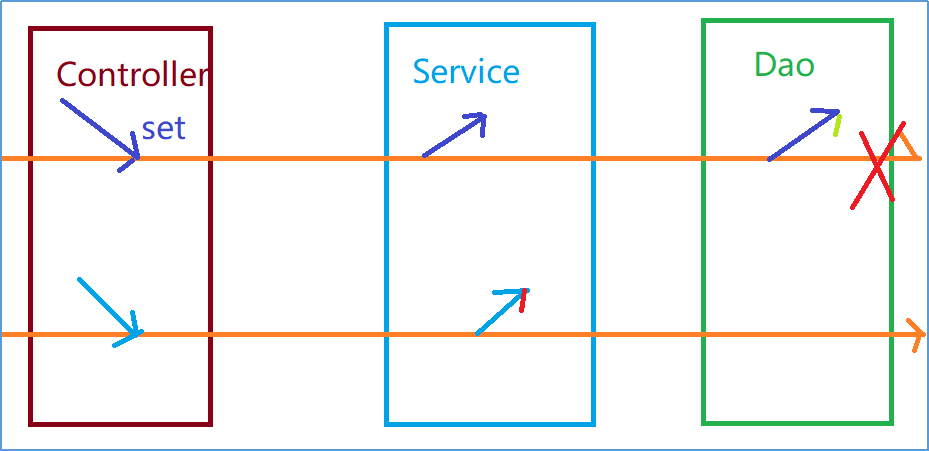
说明:ThreadLocal是线程安全的,在同一个线程内实现数据的共享.
注意:使用完成后,切记销毁threadLocal对象,否则gc不能回收.导致JVM内存泄漏.
public class UserThreadLocal {
//如果保存数据有多个,则使用Map集合
private static ThreadLocal<User> userThread = new ThreadLocal<User>();
public static void set(User user){
userThread.set(user);
}
public static User get(){
return userThread.get();
}
//线程销毁方法
public static void remove(){
userThread.remove();
}
}
1.32 如何实现的单点登录SSO
问题:因为后台的服务器采用的是集群的部署方式,肯定有多台服务器.如果将用户的登陆信息保存到服务器端,因为多个服务器之间不能共享session.所以相互之间不同实现Session共享.导致用户频繁登陆.
初级:使用Nginx提供的IP_Hash
高级:
- 当用户登陆操作时,首选访问时单点登录服务器.进行登录操作.
- 如果登录正确.则生成用户的秘钥token.将用户信息转化为JSON串和token一起保存到redis缓存中.
3.将token信息返回给客户端.将数据保存到客户端浏览器中的cookie中.
4.当用户进行其他操作需要用到用户信息时,首先检测Cookie中是否有token,第二步检测redis中的数据是否为null.如果一切正确,则允许跳转到指定页面中.如果其中有一项有误,则表示用户登陆异常.让用户重新登陆.
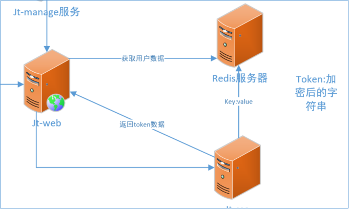
1.33 当zk如果宕机后,消费者能否正确消费?????
说明:
答案:可以
因为zk会动态的向客户端更新服务列表信息.当zk宕机后,由于之前已经同步了zk的服务列表信息,所以客户端可以按照自己已经缓存的清单进行访问.如果在这个期间服务端程序发现宕机现象,那么则访问故障机时由于不能通信,则等待超时时间,则访问下一台服务器.
如果这时,所有的服务端程序都宕机,则整个服务陷入瘫痪.
1.34 微服务治理方案(ZooKeeper)
说明:增加服务器或者减少服务器都是自动完成
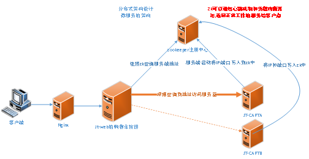
业务逻辑说明:
- 当服务的提供者启动时,会将服务的名称:IP:端口会写入注册中心.
- 注册中心内部会维护服务列表
- 当消费者需要访问服务时,需要先访问注册中心获取服务列表信息.之后将服务列表保存到本地缓存中.方便后续的访问.在客户端内部有负载均衡的算法,筛选出一台服务器,之后进行访问.
- 如果后台服务器出现宕机现象.这时注册中心通过心跳检测的方式判断服务器是否宕机.如果服务器宕机则会将该服务器信息从服务列表中删除.之后将新的服务列表发送消费者(客户端)进行更新.
1.35 你怎么理解SOA(面向服务)
面向服务的架构（SOA）是一个组件模型，它将应用程序的不同功能单元（称为服务）通过这些服务之间定义良好的接口和契约联系起来。接口是采用中立的方式进行定义的，它应该独立于实现服务的硬件平台、操作系统和编程语言。这使得构建在各种各样的系统中的服务可以以一种统一和通用的方式进行交互。
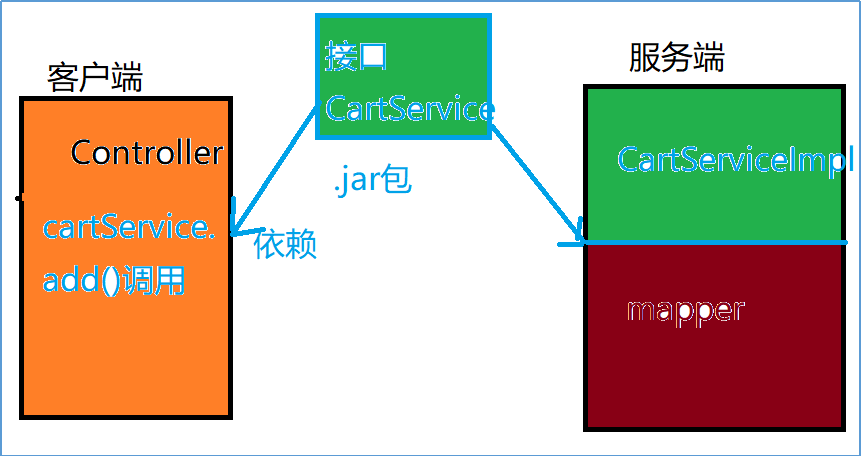
1.36 知道RPC协议吗
总结:RPC调用的规则可以传输java对象.底层实现时将数据转化流,并且该流经过加密处理.并且rpc内部使用UTF-8编码格式
要求:传输的java对象必须序列化
1.37 什么是Dubbo框架
Dubbo是 [1] 阿里巴巴公司开源的一个高性能优秀的服务框架(SOA)，使得应用可通过高性能的RPC实现服务的输出和输入功能可以和Spring框架无缝集成。
1.38 Nginx和ZK的区别
Nginx:
- Nginx主要是为了反向代理(Http)
- 负载均衡
- Nginx主要搭建在公司网关服务器上
Zk:通过RPC进行远程方法调用,是服务端程序
主要作用是实现服务端的高可用.搭建在内网中.
1.39 知道什么是消息队列吗,并说出几种常用的
消息队列可以缓解服务器的访问压力,请求在在访问服务器时,先写入消息队列中,可以实现请求的异步操作,起到平峰削骨的作用
但是缺点是消耗了用户的实际等待时间.
常见的消息队列产品有activeMQ(apache的),RabbitMQ(爱立信的)
1.40 消息队列有几种工作模式
1.简单模式2.工作模式3.发布订阅模式4.路由模式
5.主题模式 6.RPC模式
1.41 倒排索引
倒排索引源于实际应用中需要根据属性的值来查找记录。这种索引表中的每一项都包括一个属性值和具有该属性值的各记录的地址。由于不是由记录来确定属性值，而是由属性值来确定记录的位置，因而称为倒排索引(inverted index)。带有倒排索引的文件我们称为倒排索引文件，简称倒排文件(inverted file)。
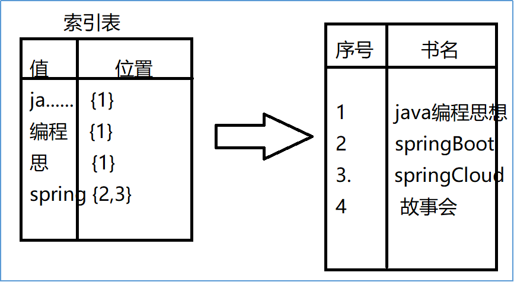
1.42 Solr介绍/ES
Solr是一个独立的企业级搜索应用服务器，它对外提供类似于Web-service的API接口。用户可以通过http请求，向搜索引擎服务器提交一定格式的XML文件，生成索引；也可以通过Http Get操作提出查找请求，并得到XML格式的返回结果.
基于Lucene的全文搜索服务器。同时对其进行了扩展，提供了比Lucene更为丰富的查询语言，同时实现了可配置、可扩展并对查询性能进行了优化，并且提供了一个完善的功能管理界面，是一款非常优秀的全文搜索引擎。
特点:
- solr可以根据数据库表自动生成索引文件.
- Solr可以动态的定期自动更新索引(对更新的数据进行索引的修改)
1.43 Docker介绍
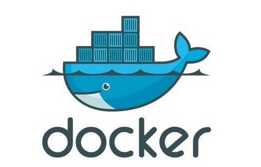
Docker 是一个开源的应用容器引擎，让开发者可以打包他们的应用以及依赖包到一个可移植的容器中，然后发布到任何流行的Linux机器上，也可以实现虚拟化，容器是完全使用沙箱机制，相互之间不会有任何接口。
一个完整的Docker有以下几个部分组成：
DockerClient客户端
Docker Daemon守护进程 客户端和Docker容器交互的媒介
Docker Image镜像 应用程序的模板
DockerContainer容器 启动后的应用程序
1.44 Docker调用原理
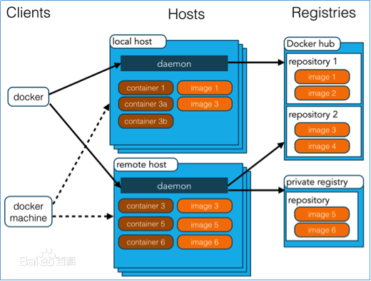
模块描述:
1.docker
Docker客户端程序
2.daemon
一般在宿主主机的后台运行,作为服务端接收客户端的请求,并且处理这些请求(创建/运行/分发容器).
客户端和服务器既可以运行在一个主机中,也可以通过socket/RESTful来实现通信
3.image:
Docker中的镜像文件, 为应用程序的模板,一般都是只读的不允许修改
Docker的镜像文件来源有两种:
1.Docker官网中的镜像文件
2.本地的镜像文件
4.Container:
Docker容器,通过image镜像创建容器后,在容器中运行应用程序(类似于new一个对象)
5.Repository:
管理镜像的仓库,类似于Maven仓库管理jar包文件
调用原理:
1.Docker客户端通过Daemon请求创建Docker容器
2.Daemon接收请求后,从Repository中查找需要的Image镜像文件
3.找到对应的镜像文件后,创建Docker容器
4.调用容器完成具体任务(redis/nginx/tomcat/mysql等)
1.45 Docker镜像拉取过程

1.当客户端获取镜像文件时,会向服务器发起请求.
2.Docker引擎首先会检查本地是否含有镜像文件,如果没有则会联网下载镜像文件
3.从共有云中获取Image镜像文件后,保存到本地
4.当用户需要使用该应用是,通过镜像文件创建容器,为用户提供服务
Dockerfile难
1.46 京淘项目人员分配
开发周期:开发4个月但是不停的更新迭代
购物车商品展现页面 商品规格
评价系统
订单物流系统 京东物流/调用菜鸟裹裹 调用第三方接口获取数据进行展现(http)
支付系统:银行接口/第三方支付 http
推荐系统:….
产品经理：3人，确定需求以及给出产品原型图
项目经理：1人，项目管理。
前端团队：5人，根据产品经理给出的原型制作静态页面。
后端团队：20人，实现产品功能。
测试团队：5人，测试所有的功能。2人 3人 脚本 shell
运维团队：3人，项目的发布以及维护。
1.47 日活量/并发量
日活量:200万
并发量:1500-2300左右
单点并发压力 18台tomcat服务器
服务器划分
Mysql 2
Mycat服务器 1
Solr 3
Redis 3
图片服务器 2
Nginx 2
注册中心 3
RabbitMQ 2
18台服务器
Jt-manage 5
Jt-web 10
Jt-sso 3
Jt-cart 5
Jt-order 5
Jt-search 5
33台tomcat1.48 SpringBoot全新开发方式特点
l 创建独立的Spring应用程序
l 嵌入的Tomcat，无需部署WAR文件
l 简化Maven配置
l 自动配置Spring
l 提供生产就绪型功能，如指标，健康检查和外部配置
1.49 什么是微服务架构？
“微服务”源于Martin Fowler的博文 Microservices。
Martin说：微服务是系统架构上的一种设计风格，它的主旨是将一个原本独立的系统拆成多个小型服务，这些小型服务都在各自独立的进程中运行，服务之间通过基于HTTP的RESTful API进行通信协作。被拆分成的每一个小型服务都围绕着系统中的某一项或者某些耦合度较高的业务功能进行构建，并且每个服务都维护着自身的数据存储、业务开发、自动化测试案例以及独立部署机制。由于有了轻量级的通信协作基础，所以这些微服务可以使用不同的语言来编写。
1.50 核心功能
l configuration management 配置中心
l service discovery 服务发现
l circuit breakers 断路器
l intelligent routing 智能路由
l micro-proxy 微代理
l control bus 控制总线
l one-time tokens 一次性令牌
l global locks 全局锁
l leadership election 选举算法
l distributed sessions 分布式会话
l cluster state 集群状态
1.51 核心组件架构图
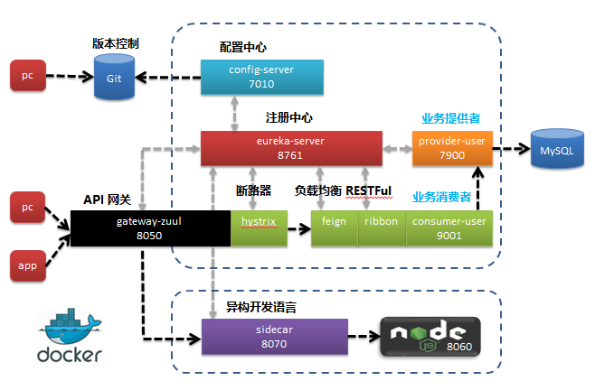
1.52 拓展：CAP定理
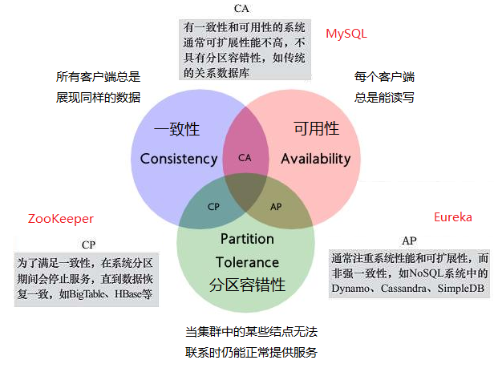
CAP原则又称CAP定理，指的是在一个分布式系统中，Consistency（一致性）、 Availability（可用性）、Partition tolerance（分区容错性），三者不可得兼。它是分布式系统中最核心最重要的理论。
分布式系统的CAP理论：理论首先把分布式系统中的三个特性进行了如下归纳：
l 一致性（C）：在分布式系统中的所有数据备份，在同一时刻是否同样的值。（等同于所有节点访问同一份最新的数据副本）
l 可用性（A）：在集群中一部分节点故障后，集群整体是否还能响应客户端的读写请求。（对数据更新具备高可用性）
l 分区容错性（P）：以实际效果而言，分区相当于对通信的时限要求。系统如果不能在时限内达成数据一致性，就意味着发生了分区的情况，必须就当前操作在C和A之间做出选择。
CAP理论就是说在分布式系统中，最多只能实现上面的两点。而由于当前的网络硬件肯定会出现延迟丢包等问题，所以分区容忍性是我们必须需要实现的。所以我们只能在一致性和可用性之间进行权衡，要么选择CP要么选择AP，没有分布式系统能同时保证这三点。
1.53 ZooKeeper和Eureka对比
Eureka本身是Netflix开源的一款提供服务注册和发现的产品，并且提供了相应的Java封装。在它的实现中，节点之间相互平等，部分注册中心的节点挂掉也不会对集群造成影响，即使集群只剩一个节点存活，也可以正常提供发现服务。哪怕是所有的服务注册节点都挂了，Eureka Clients（客户端）上也会缓存服务调用的信息。这就保证了我们微服务之间的互相调用足够健壮。
Zookeeper主要为大型分布式计算提供开源的分布式配置服务、同步服务和命名注册。曾经是Hadoop项目中的一个子项目，用来控制集群中的数据，目前已升级为独立的顶级项目。很多场景下也用它作为Service发现服务解决方案。
对比
根据著名的CAP定理（C-数据一致性；A-服务可用性；P-服务对网络分区故障的容错性CAP这三个特性在任何分布式系统中不能同时满足，最多同时满足两个CP或者AP）。
ZooKeeper
Zookeeper是基于CP来设计的，即任何时刻对Zookeeper的访问请求能得到一致的数据结果，同时系统对网络分割具备容错性，但是它不能保证每次服务请求的可用性。从实际情况来分析，在使用Zookeeper获取服务列表时，如果zookeeper正在选主，或者Zookeeper集群中半数以上机器不可用，那么将无法获得数据。所以说，Zookeeper不能保证服务可用性。
诚然，在大多数分布式环境中，尤其是涉及到数据存储的场景，数据一致性应该是首先被保证的，这也是zookeeper设计成CP的原因。但是对于服务发现场景来说，情况就不太一样了：针对同一个服务，即使注册中心的不同节点保存的服务提供者信息不尽相同，也并不会造成灾难性的后果。因为对于服务消费者来说，能消费才是最重要的——拿到可能不正确的服务实例信息后尝试消费一下，也好过因为无法获取实例信息而不去消费。（尝试一下可以快速失败，之后可以更新配置并重试）所以，对于服务发现而言，可用性比数据一致性更加重要——AP胜过CP。
Eureka
而Spring Cloud Netflix在设计Eureka时遵守的就是AP原则。Eureka Server也可以运行多个实例来构建集群，解决单点问题，但不同于ZooKeeper的选举leader的过程，Eureka Server采用的是Peer to Peer对等通信。这是一种去中心化的架构，无master/slave区分，每一个Peer都是对等的。在这种架构中，节点通过彼此互相注册来提高可用性，每个节点需要添加一个或多个有效的serviceUrl指向其他节点。每个节点都可被视为其他节点的副本。
如果某台Eureka Server宕机，Eureka Client的请求会自动切换到新的Eureka Server节点，当宕机的服务器重新恢复后，Eureka会再次将其纳入到服务器集群管理之中。当节点开始接受客户端请求时，所有的操作都会进行replicateToPeer（节点间复制）操作，将请求复制到其他Eureka Server当前所知的所有节点中。
一个新的Eureka Server节点启动后，会首先尝试从邻近节点获取所有实例注册表信息，完成初始化。Eureka Server通过getEurekaServiceUrls()方法获取所有的节点，并且会通过心跳续约的方式定期更新。默认配置下，如果Eureka Server在一定时间内没有接收到某个服务实例的心跳，Eureka Server将会注销该实例（默认为90秒，通过eureka.instance.lease-expiration-duration-in-seconds配置）。当Eureka Server节点在短时间内丢失过多的心跳时（比如发生了网络分区故障），那么这个节点就会进入自我保护模式。
总结
ZooKeeper基于CP，不保证高可用，如果zookeeper正在选主，或者Zookeeper集群中半数以上机器不可用，那么将无法获得数据。Eureka基于AP，能保证高可用，即使所有机器都挂了，也能拿到本地缓存的数据。作为注册中心，其实配置是不经常变动的，只有发版（发布新的版本）和机器出故障时会变。对于不经常变动的配置来说，CP是不合适的，而AP在遇到问题时可以用牺牲一致性来保证可用性，既返回旧数据，缓存数据。
所以理论上Eureka是更适合作注册中心。而现实环境中大部分项目可能会使用ZooKeeper，那是因为集群不够大，并且基本不会遇到用做注册中心的机器一半以上都挂了的情况。所以实际上也没什么大问题。
1.54 拓展：分布式对关系型数据库的冲击
对于web网站来说，关系数据库的很多主要特性却往往无用武之地
l 数据库事务一致性需求
很多web实时系统并不要求严格的数据库事务，对读一致性的要求很低，有些场合对写一致性要求并不高。允许实现最终一致性。
l 数据库的写实时性和读实时性需求
对关系数据库来说，插入一条数据之后立刻查询，是肯定可以读出来这条数据的，但是对于很多web应用来说，并不要求这么高的实时性，比方说发一条消息之后，过几秒乃至十几秒之后，我的订阅者才看到这条动态是完全可以接受的。如：MQ消息队列机制，意义，可以解决瞬时的高并发，消峰填谷作用。
l 对复杂的SQL查询，特别是多表关联查询的需求
任何大数据量的web系统，都非常忌讳多个大表的关联查询，以及复杂的数据分析类型的报表查询，特别是SNS类型的网站，从需求以及产品设计角度，就避免了这种情况的产生。往往更多的只是单表的主键查询，以及单表的简单条件分页查询，SQL的功能被极大的弱化了。
SNS：全称Social Networking Services，专指社交网络服务，包括了社交软件和社交网站。例如：脸谱facebook、腾讯QQ、微信等。
1.55 自我保护模式
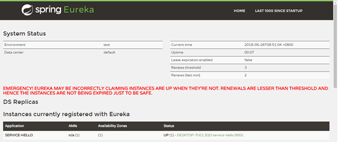
什么是自我保护模式？默认配置下，如果Eureka Server每分钟收到心跳续约的数量低于一个阈值（instance的数量(60/每个instance的心跳间隔秒数)自我保护系数），并且持续15分钟，就会触发自我保护。在自我保护模式中，Eureka Server会保护服务注册表中的信息，不再注销任何服务实例。当它收到的心跳数重新恢复到阈值以上时，该Eureka Server节点就会自动退出自我保护模式。它的设计哲学前面提到过，那就是宁可保留错误的服务注册信息，也不盲目注销任何可能健康的服务实例。该模式可以通过eureka.server.enable-self-preservation = false来禁用，同时eureka.instance.lease-renewal-interval-in-seconds可以用来更改心跳间隔。
1.56 Ribbon
Feign是netflix开发的声明式、模板化的http客户端，在使用时就像调用本地(服务消费者自己)的方法一般，帮助我们更加优雅的调用服务提供者的API。Feign自身支持springMVC，还整合了Eureka、Ribbon，极大的简化了Feign的使用。就整合Euraka而言，只需和普通的服务配置Eureka server的信息即可。整合Ribbon，就意味着不再需要通过标注@LoadBalanced的实例化后的RestTemplate去调用服务提供者方法了。Feign只需通过简单的定义一个接口即可实现负载均衡。
和nginx不同，它是客户端侧负载均衡。
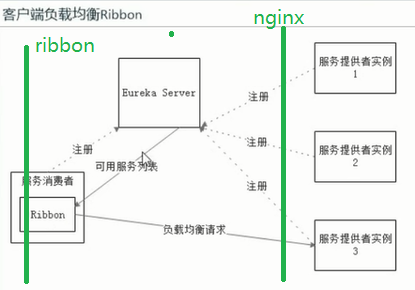
1.57 负载均衡策略
常见提供的负载均衡算法有三种：
l 第一种也是默认为轮询
l 第二种为random随机
l 第三种为WeightedResponseTimeRule，响应时间
1.58 Feigh概念
Feigh是一个声明式web服务客户端。它能让开发web服务变得容易。使用Feign需要创建一个接口并注解它。它拥有包括Feign注解和JAX-RS注解的可插拔支持。它还支持可插拔的编码器和解码器。Spring Cloud拥有Spring MVC支持，并使用Spring Web中默认同样的HttpMessageConverters。在使用Feign时，Spring Cloud集成了Ribbon和Eureka来提供负载均衡的HTTP客户端。
总结：Feign简化HttpClient开发，封装了JAX-RS和SprinMVC的注解，学习成本很低。
1.59 微服务设计引发新的问题
微服务的设计，服务分散在多个服务器上，服务之间互相调用，要调用的服务由于跨网络跨服务器调用，响应速度明显比传统项目单机调用慢很多，甚至由于网络涌动的不稳定的现象发生导致调用超时；还有类似级联失败、雪崩效应（依赖的基础服务宕机，关联的服务导致失败甚至宕机，就像滚雪球一样层层失败。）
如何解决这类新的问题呢？传统的机制就是超时机制。
1.60 熔断机制
家里电表都有个断路器（俗称电闸），当使用的电器很多，用电巨大（例如功率过大、短路等），当电流过载时，电路就会升温，甚至烧断电路，引起火灾。有了这个断路器，我们及时拉闸，就不会造成严重后果了。
断路器可以实现快速失败，如果它在一段时间内检测到许多失败，如超时，就会强迫其以后的多个调用快速失败，不再请求所依赖的服务，从而防止应用程序不断地尝试执行可能会失败的操作，这样应用程序可以继续执行而不用等待修正错误，或者浪费CPU时间去等待长时间的超时。断路器也可以使应用程序能够诊断错误是否已经修正，如果已经修正，应用程序会再次尝试调用操作。
断路器模式像是那些容易导致错误的操作的一种代理。这种代理能够记录最近调用发生错误的次数，然后决定使用允许操作继续，或者立即返回错误。
ending...